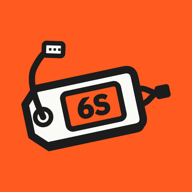

Packlog FPVHelp and contact
Questions, bugs or ideas for Packlog FPV? Write to packlogfpv@mateuszczarczynski.pl. We’ll get back to you as soon as we can.
Before you write
An NFC tag won’t read
On iPhone, tap “Hold to a tag” and hold the top edge of the phone to the tag. On Android, NFC has to be on in the phone’s settings and the app open on the Scan tab. On a pack, a regular tag often won’t work because of the foil: you need an on-metal tag. See which tags to buy.
Moving to a new phone
On the old phone: Settings → Backup → “Export backup”, and save the file, e.g. to iCloud or Google Drive. On the new one: Settings → Backup → “Restore from file”. Restoring replaces every pack and its history on the new phone.
Reminders don’t come
Check that Packlog FPV is allowed to send notifications in the phone’s settings, and that reminders aren’t turned off in the app, under Settings → Reminders. Reminders come at 12 pm, 4 pm or 8 pm once a pack passes its threshold.
Packlog Pro after a reinstall or on a new phone
Settings → Packlog Pro → “Restore an earlier purchase”. Sign in to the App Store or Google Play with the same account you bought Pro with.
When reporting a bug, include your phone model, system version and app version (Settings → Version). A screenshot helps a lot.